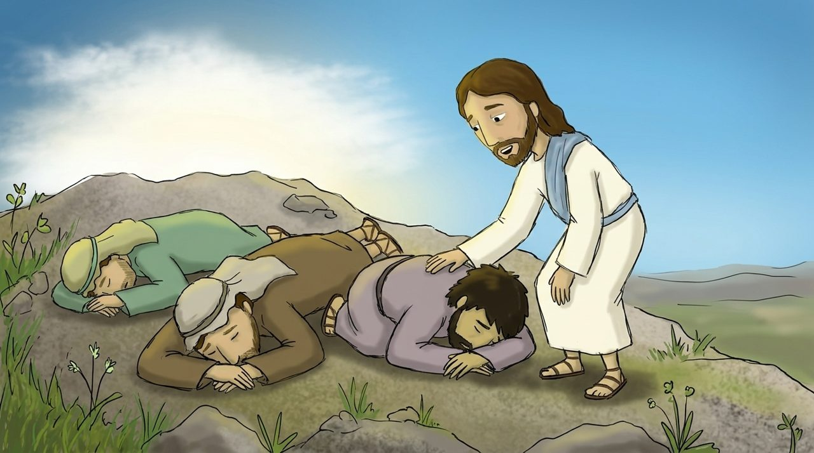
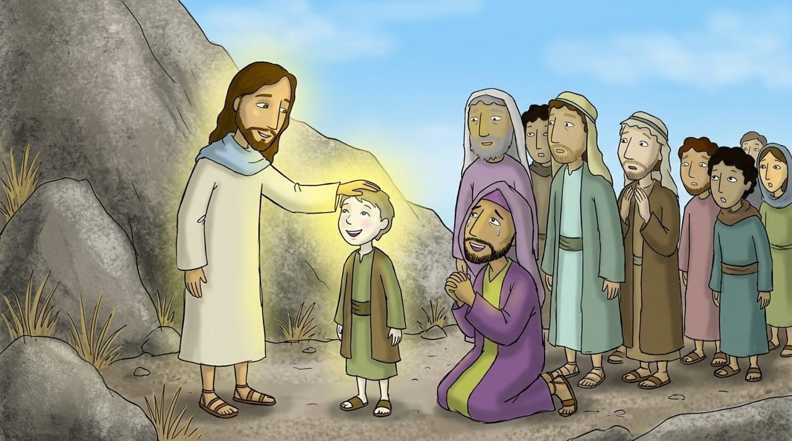
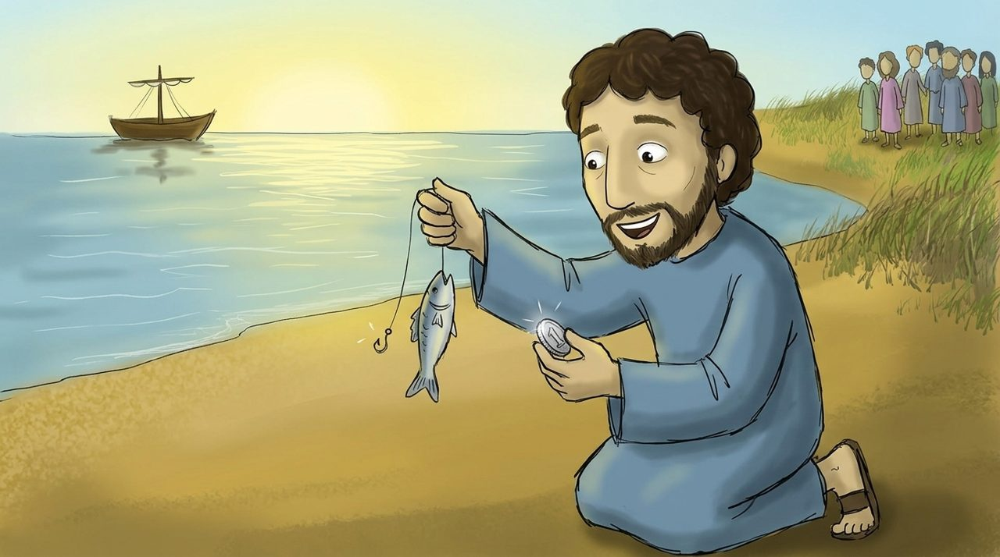

Uşaqlar üçün Müqəddəs Kitab dərsi · Matta, 22-ci dərs
Onu dinləyin
Matta 17:1–27
Sarı sözlərə toxun, mənası çıxacaq. 🔊 düyməsi Azərbaycan dilində oxuyur.
Bu gün nə öyrənəcəyik?
Uca dağda İsanın görünüşünün nurla dəyişdiyini öyrənəcəyik.
Allahın “İsanı dinləyin” dediyini öyrənəcəyik.
Xardal toxumu qədər imanın da qiymətli olduğunu öyrənəcəyik.
Səhnə 1 · Matta 17:1–5
Günəş kimi parlayan İsa
İsa Peteri, Yaqubu və Yəhyanı götürüb uca dağa çıxdı. O an İsanın üzü günəş kimi parladı, paltarı nur kimi ağappaq oldu. Onun .
Musa və görünüb İsa ilə danışırdılar. Onda parlaq buluddan Allahın səsi gəldi: “Bu Mənim sevimli Oğlumdur, Ondan razıyam. Onu dinləyin!”

Səhnə 2 · Matta 17:6–13
Qalxın, qorxmayın
Şagirdlər çox qorxub yerə qapandılar. İsa yanlarına gəlib onlara və dedi: “Qalxın, qorxmayın.”
Şagirdlər başlarını qaldıranda yalnız İsanı gördülər. Allah qorxulu deyil, İsa vasitəsilə bizə yaxınlaşır.

Səhnə 3 · Matta 17:14–21
Xəstə oğlana şəfa verdi
Dağın ətəyində bir ata İsanın qarşısında diz çökdü: “Ya Rəbb, oğluma rəhm et. Tez-tez oda və suya yıxılır.” Şagirdlər ona şəfa verə bilməmişdilər.
İsa oğlana şəfa verdi. Sonra dedi: “Əgər sizin qədər imanınız olsa, bu dağa “buradan oraya keç” desəniz, keçəcək.”

Səhnə 4 · Matta 17:24–27
Balığın ağzındakı sikkə
Məbəd si toplayanlar Peterdən soruşdular: “Sizin müəlliminiz vergi vermir?”
İsa dedi: “Gölə get, qarmaq at. Tutduğun ilk balığın ağzını açanda bir sikkə tapacaqsan. Onu götürüb Mənim və sənin əvəzinə ver.” Peter həqiqətən sikkəni tapdı!
Bu həftənin əzbər ayəsi
“Bu Mənim sevimli Oğlumdur, Ondan razıyam. Onu dinləyin!”
Matta 17:5 · uşaqlar üçün sadə dildə
Bu Mənim sevimli , Ondan . Onu !
Boş yerlər üçün sözləri ardıcıl seç.
Söz lüğəti
Toxun, mənasına bax
Yoxlama sualları
4 sual
Gəlin düşünək
Allah “Onu dinləyin” dedi. Mən İsanın sözünü nə vaxt dinləyirəm?
Qorxanda İsa “Qalx, qorxma” desə, necə hiss edərəm?
Xardal toxumu qədər kiçik iman niyə qiymətlidir?
Rəsm çək
Dağda günəş kimi parlayan İsanı çək.
Kağıza çək və şəklini müəllimə göndər
İsanı nə vaxt dinləyəcəksən?
Birlikdə dua edək
Allahım, İsanın Sənin sevimli Oğlun olduğunu göstərdiyin üçün Sənə şükür edirəm. İsanın sözünü yaxşı dinləyən olum. Qorxanda “Qalx, qorxma” deyən İsanı xatırlayım və kiçik imanımı da Ona verim. İsa Məsihin adı ilə dua edirəm. Amin.